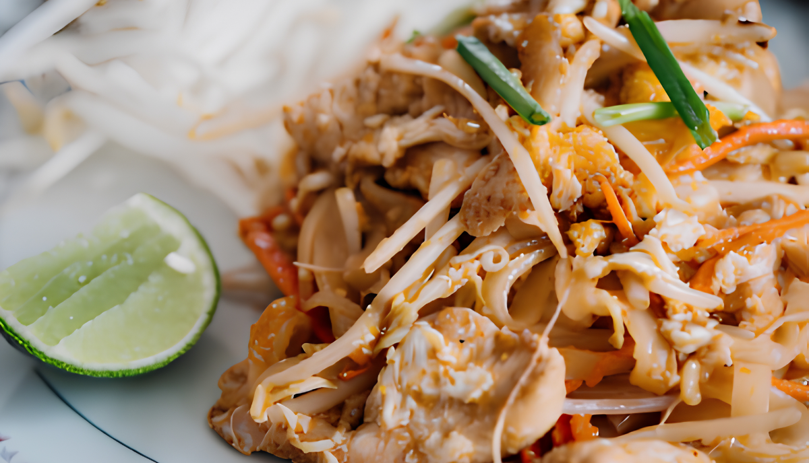

Ásia é o maior dos continentes, tanto em área como em população. Abrange um terço
das partes sólidas da
superfície da Terra e é responsável por abrigar quase três quintos da população mundial.
O continente possuí uma divisão em grandes regiões
com suas próprias características únicas mas que acabam não sendo muito comentadas.
E aqui iremos falar curiosidades e sua importância cultural, então segue o restante do texto!!
